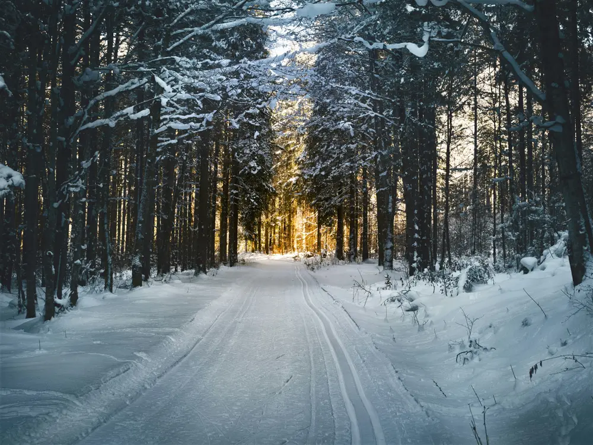

Edinburgh in winter:
festive lights, cold air, warm rooms.
A slow guide to winter in Edinburgh: the festive season, the quieter months after it, and how to plan around short days and changeable weather.

Why visit Edinburgh in winter?
Edinburgh has a different kind of beauty in winter. Some areas become quieter, the historic streets glow beneath festive lights, and the skyline looks especially atmospheric on cold, clear days. From the Christmas markets to the Hogmanay celebrations, the season gives you plenty of reasons to explore. [1]
Winter here generally covers December, January and February. December brings the festive markets and the build up to New Year. January and February are calmer, and they suit museums, galleries, historic streets and local food without planning every day around a big event.
- Festive atmosphere. Christmas markets, decorations and winter events fill the city centre.
- Scottish traditions. Hogmanay and Burns Night are chances to see Scottish culture up close.
- Indoor attractions. Museums, galleries, theatres and visitor experiences give you options on cold or rainy days.
- Cosy food. Cafés, restaurants and traditional pubs are welcoming places to warm up.
The dates in this guide are for winter 2026 to 2027. Programmes, locations and ticket arrangements change, so confirm them on the official websites before you book.
The Old Town and Edinburgh Castle
The Old Town and the Royal Mile
The Old Town is one of the most atmospheric parts of the city in winter. Narrow closes, cobbled streets and traditional architecture make a memorable setting for a cold-weather walk. The Royal Mile connects Edinburgh Castle with the Palace of Holyroodhouse, passing historic buildings, independent shops and cafés.
Take time for the smaller closes that branch off it, which often lead to quieter corners and interesting details. Wear shoes with good grip, because historic streets and pavements can be slippery when wet or icy.
Edinburgh Castle
Sitting high above the Old Town, the castle gives views across the city and a way into Scottish history. A winter visit can be rewarding on a clear day, when the rooftops and the distant landscape are easy to see. Inside, you can explore historic buildings, exhibitions and objects linked to Scotland's royal and military past. Allow enough time instead of treating it as a quick photo stop. Opening hours and ticket availability change with the season, so check the castle's official website before you go. [2]
Christmas and Hogmanay
Edinburgh's Christmas markets
Edinburgh's Christmas is one of the big attractions of the season. The city centre fills with decorations, seasonal food, gift stalls and entertainment. The traditional markets are in East Princes Street Gardens, with further festive attractions around other central locations, so you can browse gifts, try hot food and drink, and enjoy the atmosphere beneath the historic skyline.
For winter 2026 to 2027, Edinburgh's Christmas runs from 14 November 2026 to 3 January 2027. Event locations, activities and ticket arrangements can change, so check the official website before you visit. [3] A weekday visit is usually more comfortable if you want to avoid the crowds, and you should allow extra time in busy areas if you come for the lights in the evening.
Hogmanay
Hogmanay is the Scottish word for the New Year celebrations, and Edinburgh is well known for its organised events. They can include live music, street events, a torchlight procession and other festivities, and the programme changes from year to year. For 2026 to 2027, Edinburgh's Hogmanay is scheduled for 29 December 2026 to 1 January 2027. [3]
If you plan to go, keep these practical points in mind:
- Check which events need tickets in advance.
- Book accommodation early for the New Year period.
- Expect busy streets and possible road closures near event locations.
- Check public transport arrangements before you travel.
- Dress warmly for outdoor celebrations.
- Decide how you will get back to your accommodation before the event starts.
Christmas at the Botanics
The Royal Botanic Garden Edinburgh is worth visiting all year, and in the festive season Christmas at the Botanics turns part of it into an illuminated outdoor trail, with light installations and seasonal displays along a planned route. It makes an enjoyable evening activity. For 2026 it starts on 19 November and runs on selected evenings, so check the official website for the final date, tickets and visitor guidance. It is outdoors, so wear a warm coat and comfortable shoes. [4]
Burns Night
Burns Night takes place on 25 January and celebrates the life and work of the Scottish poet Robert Burns. It is a good reason to visit after the busiest festive weeks, and a chance to meet Scottish food and tradition in a relaxed way.
Views and winter walks
Calton Hill
Calton Hill is one of the best-known viewpoints in Edinburgh, with panoramic views of the Old Town, the New Town, the castle and the landscape beyond. A winter walk up the hill is rewarding on a clear day, and the shorter daylight can give changing afternoon light. Pick a suitable day, wear warm clothing and take care on steps and paths that may be wet or icy. It is a good option if you want scenic photographs without a long journey.
Dean Village and the Water of Leith
Dean Village is one of Edinburgh's most picturesque neighbourhoods, close to the centre and beside the Water of Leith. A winter walk there is a quiet contrast to the busy streets around the Royal Mile and Princes Street. You can explore the old buildings and continue along the Water of Leith Walkway if conditions allow. Take care near the river after heavy rain or in icy weather, and check path conditions first.
Museums and galleries
Not every winter day needs to be outdoors. Edinburgh has several cultural attractions for history, art, science and Scottish heritage.
National Museum of Scotland
A useful stop if you are interested in science, design, natural history, technology and Scottish history. Its wide collections suit different interests and ages, and it is a practical choice when rain or cold makes sightseeing outside less comfortable. [5]
Scottish National Gallery
Near Princes Street Gardens, the Scottish National Gallery is an excellent choice for art lovers, with works from different periods and traditions. You can combine a visit with a walk around Princes Street and the nearby streets.
Before you go, check the official opening hours, current exhibitions and any access arrangements. Some exhibitions or events need a separate ticket even when general admission is free. Our culture and history guide and our libraries journal have more indoor ideas.
Leith, Scottish food and cosy cafés
Leith
Leith offers a different view of Edinburgh. This historic waterfront district has a strong local identity, independent businesses and plenty of places to eat and drink. Winter is a good time for its indoor dining and waterfront atmosphere: plan a relaxed meal, stop at a local café, or wander around The Shore. The Royal Yacht Britannia at Ocean Terminal is another attraction to consider, with the story of the former royal yacht. Check opening times first, especially around Christmas and New Year. [6]
Food to look out for
Cold weather makes food a big part of a winter city break. These traditional choices suit the season:
- Haggis. A traditional Scottish dish, commonly served with neeps and tatties.
- Cullen skink. A warming soup traditionally made with smoked haddock.
- Shortbread. A classic biscuit, often enjoyed with tea or coffee.
- Porridge. A simple, warming breakfast.
- Afternoon tea. A relaxed way to spend part of a winter afternoon.
Menus and availability vary, so check each venue. For more ideas, read our guide to eating slowly in Edinburgh.
Winter day trips from Edinburgh
If you have extra time, a nearby destination gives a different experience from the capital. Winter daylight is limited and the weather can affect transport, so check travel conditions, train services, opening hours and forecasts before you leave.
South Queensferry
A coastal town known for its waterfront and views of the Forth bridges, and a pleasant short excursion when conditions allow.
North Berwick
A seaside town in East Lothian, known for its beaches, coastal scenery and views towards Bass Rock. A winter visit can be peaceful, though the coast can be windy and cold.
Stirling
A good choice if you are interested in Scottish history, with Stirling Castle and the historic centre making it worth considering as a day trip.
Weather and what to pack
Temperatures are cold compared with summer, daylight is short, and you should be ready for rain, wind and the occasional frost or snow. Snow is possible but not guaranteed, so plan for changeable conditions rather than a city under snow. Weather varies from day to day, so check a reliable forecast close to your dates, such as the Met Office. [7]
December
The festive month. Christmas markets, decorations and New Year preparations create a lively atmosphere, which suits anyone interested in Christmas experiences, although popular dates can be busy.
January
Quieter after the main celebrations, and a good time for museums, galleries, historic attractions and relaxed exploring. Burns Night falls on 25 January.
February
Another chance to see Edinburgh outside the busiest festive period. Combine indoor attractions with short outdoor walks as the daylight slowly grows.
Put the outdoors in the bright hours, and keep everything else for after dark.
What to pack
- A warm, waterproof winter jacket.
- Comfortable walking shoes with good grip.
- Warm socks, and gloves, a scarf and a hat.
- Thermal layers for the coldest days.
- An umbrella or a waterproof outer layer.
- A small day bag for personal essentials.
- A portable phone charger for long days out.
Layer your clothes, because you will move between cold streets and heated indoor attractions several times a day. For an outdoor evening event, bring an extra warm layer.
Practical tips for a winter visit
- Plan around daylight. Use the brighter hours for viewpoints and longer walks, and keep museums, galleries and indoor activities for later.
- Book popular events early. Christmas activities and Hogmanay events can be busy, so check ticket availability before you finalise plans.
- Check holiday opening hours. Attractions, restaurants and shops may have different schedules around Christmas Day, Boxing Day and New Year's Day.
- Use public transport when you need it. Buses and trams can help when walking in cold or wet weather is uncomfortable. Check current routes and service updates.
- Leave room for the weather. Do not plan every hour tightly, and keep an indoor alternative ready for rain, strong wind or ice.
- Stay close to the centre. It makes major attractions, restaurants and seasonal events easier to reach.
A relaxed one-day winter itinerary
Use this as a loose frame. Check opening times, and allow extra travel time on busy festive dates.
Morning — Edinburgh Castle and the Royal Mile
Start at the castle while the light is good, then walk down the Royal Mile and into the closes of the Old Town.
Afternoon — A museum and a warm lunch
Visit the National Museum of Scotland, have lunch at a nearby café or restaurant, and walk towards Princes Street Gardens if the weather allows.
Evening — The markets or a quiet dinner
If the Christmas markets are running during your visit, explore them after dark. Otherwise have dinner in the Old Town or Leith, or choose a theatre performance or another indoor experience.
Questions about winter in Edinburgh
Is Edinburgh worth visiting in winter?
Yes. It offers historic attractions, museums, galleries, seasonal events and festive celebrations. December is popular for Christmas and Hogmanay, while January and February suit a quieter city break.
What are the best things to do in winter?
Popular choices include walking the Royal Mile, visiting Edinburgh Castle, browsing the Christmas markets, celebrating Hogmanay, visiting the National Museum of Scotland and walking through Dean Village.
Does it snow in Edinburgh?
Snow is possible, but it is not guaranteed. Prepare for cold, wet and changeable weather instead of planning around snowfall.
Is Edinburgh cold in December?
Generally, yes, with short daylight hours and the chance of rain, wind and frost. Warm layers, a waterproof jacket and comfortable footwear are recommended.
Are the Christmas markets open in January?
Dates vary each year. For 2026 to 2027, Edinburgh's Christmas runs until 3 January 2027. Check the official event website for the latest schedule.
What is Hogmanay?
Scotland's New Year celebration. Edinburgh hosts organised events around the end of December and the start of January, with programmes that may include music, processions and other celebrations.
What can you do when it rains?
Visit the National Museum of Scotland, the Scottish National Gallery, Edinburgh Castle, the Camera Obscura or another indoor attraction. Cafés, restaurants and theatres are also good options.
Is January a good time to visit?
It can be, if you prefer a quieter trip and enjoy museums, historic attractions and indoor experiences. Some seasonal events finish in early January, so check dates before you book.
How many days do you need?
Two or three days give a good introduction to the main attractions. A longer stay leaves time for museums, neighbourhoods, seasonal events and nearby destinations.
Final thoughts
Edinburgh in winter is about more than Christmas markets and cold weather. It is a chance to explore historic streets, learn about Scottish culture, enjoy local food and join seasonal celebrations. December brings festive energy and Hogmanay, while January and February suit a calmer city break.
With warm clothes, flexible plans and a little research, you can enjoy the city at a slower pace in any part of the season.
Visiting in another season? Read our spring, summer or autumn guide, or keep planning with our Edinburgh travel guide and the best places in Edinburgh.
Further reading
[1] Edinburgh.org — Winter in Edinburgh
[2] Edinburgh Castle — plan your visit
[3] Edinburgh.org — Edinburgh's Christmas and Hogmanay
[4] Royal Botanic Garden Edinburgh — what's on
[5] National Museum of Scotland
[7] Met Office — weather forecasts
This article provides general travel inspiration. Event dates, opening times, ticket rules and access arrangements may change, so check official sources before you travel.